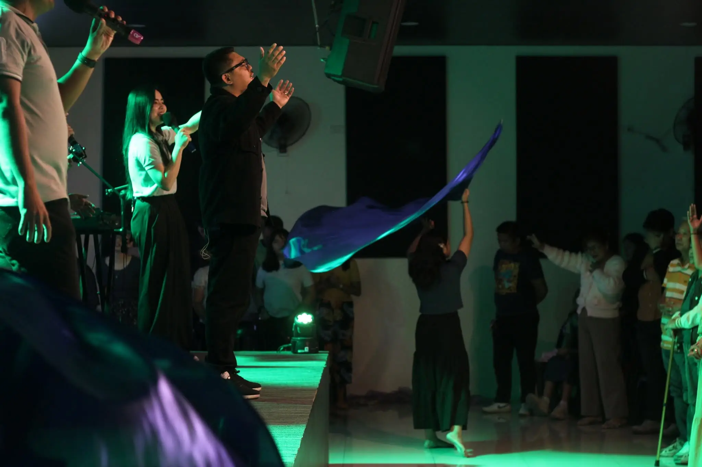
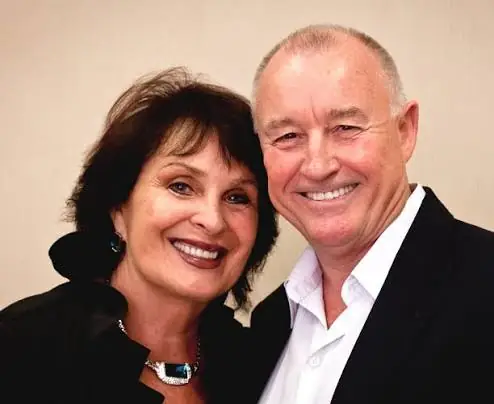

About Us
Victory Churches of Asia Muzon
We exist to reach people with the Gospel, teach God's Word, and mobilize believers to live for Christ.
A FAMILY,
A MISSION,
A PURPOSE.
Victory Churches of Asia exists for the glory of God and the expansion of His Kingdom through reaching, teaching, and mobilizing people to become like Christ.
At Victory Churches of Asia - Muzon, we are a community of believers committed to loving God, growing in His Word, and reaching others with the Gospel. Whether you are exploring faith for the first time or looking for a church family, you are welcome here.
You belong here.

Our Mission
VCA exists entirely for God’s glory and the aggressive expansion of His Kingdom through evangelism, church planting, and global missions.
It operates as a prophetic movement driven strictly by the mandate of the Great Commission.
Our Vision & Core Strategy
Captured entirely by the three-part purpose: Reach, Teach, and Mobilize.
The Ten Tenets of Victory Churches of Asia
These ten foundational principles guide our culture, leadership, ministry, and commitment to fulfilling the Great Commission through reaching, teaching, and mobilizing people.
God is the Author
God is the author of Victory Churches.
Generosity
God is the source of all our needs, so we are generous.
Reach • Teach • Mobilize
We have a lifetime commitment to our vision: Reach, Teach, and Mobilize.
Continuous Renewal
We purpose to be continually renewed in our vision and our mind.
People First
People are the focus of our ministry, not programs.
Problem Solvers
We believe every problem can be solved.
Teamwork & Agreement
Teamwork and agreement is the place of power.
Relationship Leadership
We seek to lead through relationship rather than position.
Commitment to Increase
We are committed to increase rather than maintenance.
God's Word is True
We hold the Word of God to be true and every contrary circumstance subject to change.
Every Church Has a Story
Every church begins with a calling. Before buildings are raised, before congregations gather, God is already writing a story of faith, purpose, and transformed lives.

The Global Core
Victory Churches International
The movement began on Mother's Day, May 13, 1979, in Lethbridge, Alberta, Canada. Drs. George and Hazel Hill opened the first service with just 25 people in attendance, including babies and children.
From that raw, grass-roots beginning, it quickly grew into one of the fastest-growing church-planting movements in North America.
Today, that movement has expanded into a global family across 40 nations, with thousands of churches, Bible colleges, and orphanages.
“Go therefore and make disciples of all nations...”
Matthew 28:19The Regional Core
Victory Churches of Asia Philippines
In September 2003, after spending 25 years aggressively pioneering and planting churches across the Philippines, Pastors Rich and Ning Conte officially partnered under the apostolic covering of VCI to establish Victory Churches of Asia.
Later that same year, the breakthrough Fairview chapter was launched, setting off a rapid, grass-roots chain reaction.
Over the last two decades, this purpose-driven movement has multiplied into more than 30 regional church-planting locations across the Philippines, including key territories in Bulacan and San Jose del Monte.
The Local Chapter
The Story of VCA Muzon
The story of VCA Muzon is fundamentally a story of quiet faithfulness, steady growth, and learning to serve where there is a need.
Our Senior Pastor, Pastor Boaz, spent his formative years of ministry learning the heart and DNA of our movement at VCA Fairview. Before stepping into senior leadership, his path was defined by hands-on service alongside the church family.
He served as a full-time worker, was active in campus and youth ministries, contributed as a core member of the worship team, and faithfully supported the church's daily operations.
On December 31, 2017, following years of preparation and mentoring at Fairview, Pastor Boaz was officially assigned and installed as the Senior Pastor of VCA Muzon.
On December 31, 2026, Pastor Boaz and the VCA Muzon family will celebrate 9 years of shared ministry, serving families, mentoring the next generation, and expanding the reach of the Gospel across Bulacan.
Our Story Continues
Maybe Your Story Begins Here.
God is still writing stories of hope, restoration, and new beginnings. Whether you are searching for purpose, community, or a deeper relationship with Christ, you are always welcome here. There is a place for you in this story.
YOU BELONG HERE
No matter where you are in life, there is a place for you at VCA Muzon.